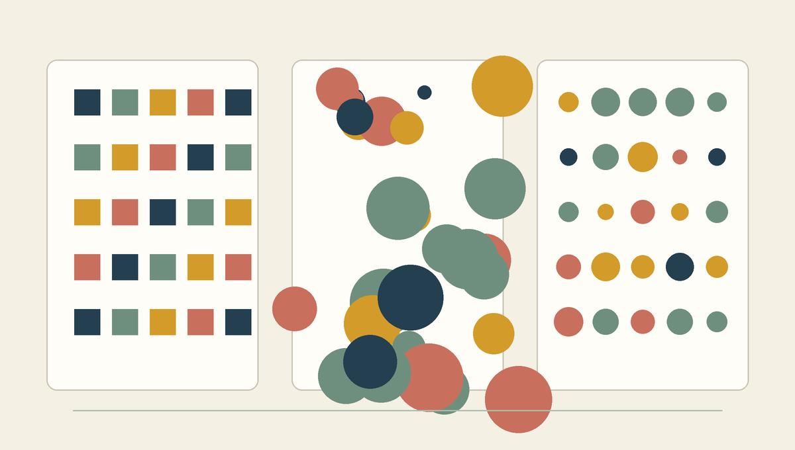
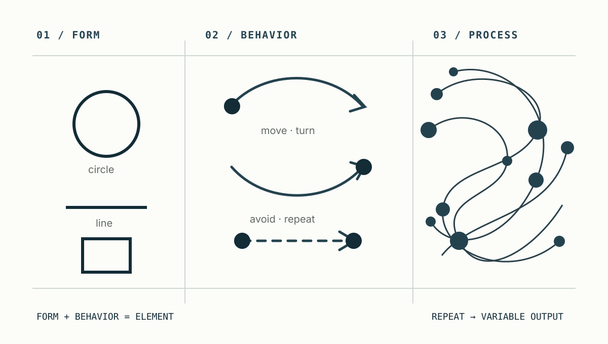
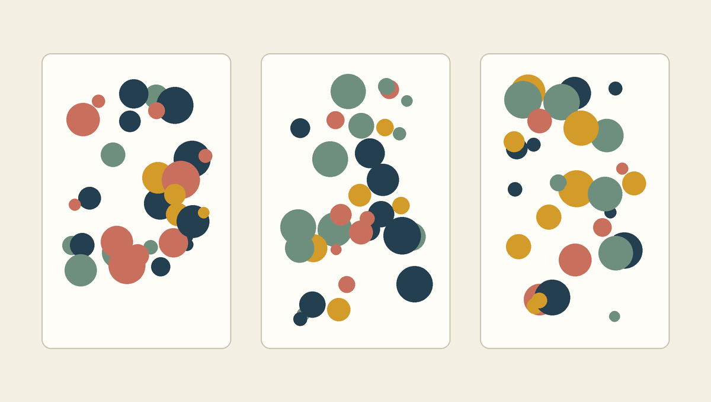

예측 가능한 패턴에서 재현 가능한 변주로 이동하기
- 형식
- 기본 50분 / 확장 60분 · + 10 MIN EXTENSION
- 핵심
randint(),choice(),seed()- 연결
- 예측 가능한 반복 → 재현 가능한 변주
오늘의 학습 목표
- 고정 반복, 제약이 약한 우연, 통제된 우연의 차이를 고정 요소와 변화 요소로 설명할 수 있습니다.
import random과 점 표기법을 도구 상자와 기능의 관계로 읽을 수 있습니다.random.randint(a, b)가 양 끝값을 포함한다는 사실을range()와 구분할 수 있습니다.random.choice(palette)가 리스트에서 항목 하나를 선택하는 과정을 설명할 수 있습니다.- 무작위 위치·크기·색상을 변수에 저장하고 Pillow 도형의 좌표와 연결할 수 있습니다.
random.seed()와 난수 호출 순서가 결과 재현에 미치는 영향을 설명할 수 있습니다.- 도형이 캔버스 밖으로 잘리지 않도록 크기를 먼저 뽑고 안전한 좌표 범위를 계산할 수 있습니다.
- 0-5 min4주차 연결
예측 가능한 격자에서 고정된 것과 달라지는 것을 다시 찾습니다.
- 5-15 min통제된 우연
세 시각 구조와 두 공식 사례를 규칙·선택·출력으로 분석합니다.
- 15-26 min난수 도구 읽기
randint()와choice()의 입력과 가능한 결과를 구분합니다. - 26-36 min이미지에 연결
무작위 값을 위치·크기·색상에 연결하고 안전한 좌표를 계산합니다.
- 36-44 min시드와 재현
같은 시드와 같은 실행 순서가 같은 선택을 만드는 원리를 이해합니다.
- 44-50 min전체 코드 확인
완전한 Pillow 프로그램을 묶음별로 읽고 대표 오류를 진단합니다.
수업 운영: 기본 50분과 확장 60분
기본 50분에서는 4주차 회상, 통제된 우연의 개념, randint()와 choice(), 안전한 좌표, seed(), 전체 코드까지 진행합니다. 각 확인 문제는 실행 전에 개인 답을 적고 곧바로 접이식 기준 답안을 확인합니다. 진도가 빠를 때만 50-60분 확장에서 같은 규칙에 세 시드를 적용하고 결과 차이를 근거 문장으로 기록합니다.
코드를 처음 보는 학생을 위한 난수 코드 읽기 순서
- 고를 수 있는 후보를 먼저 찾습니다. 숫자 범위인지 리스트인지 확인합니다.
- 선택 결과를 기억할 변수 이름을 찾습니다.
size,x,color처럼 역할을 말합니다. - 그 값이 쓰이는 도형 명령을 찾습니다. 위치, 크기, 색 가운데 무엇이 달라지는지 연결합니다.
- 고정된 값과 달라지는 값을 나눕니다. 캔버스와 반복 횟수는 고정되고 각 도형의 속성은 달라질 수 있습니다.
- 한 번의 반복만 완전히 추적합니다. 난수 전체를 미리 맞히려 하지 말고 가능한 범위와 사용 위치를 확인합니다.
0-5분 · 4주차의 예측 가능한 격자에서 출발하기
4주차에는 리스트로 여러 RGB 색상을 순서대로 묶고, 바깥 반복의 row와 안쪽 반복의 column을 좌표에 연결했습니다. 아래 코드에서 같은 변수값을 사용하면 도형의 위치와 색은 실행할 때마다 같습니다.
for row in range(rows):
color = palette[row]
for column in range(columns):
x = start_x + column * gap_x
y = start_y + row * gap_y
draw.ellipse((x, y, x + 60, y + 60), fill=color)row = 2, column = 3이면 x와 y는 계산식에 따라 하나로 정해집니다. 팔레트도 palette[2]처럼 주소를 지정하므로 선택 결과가 바뀌지 않습니다. 이처럼 같은 입력이 같은 절차를 거쳐 언제나 같은 결과를 만드는 구조를 이번 수업에서는 예측 가능한 규칙이라고 부르겠습니다.
palette[row]random.choice(palette)draw.ellipse(...)5주차에는 반복문을 버리지 않습니다. 반복 횟수는 계속 for가 담당하고, 각 반복에서 위치·크기·색상 가운데 일부를 선택하게 합니다. 따라서 새로운 질문은 “어떻게 무작위로 만들까?”가 아니라 “어떤 선택은 허용하고 어떤 선택은 허용하지 않을까?”입니다.
고정된 것과 달라지는 것 표시하기
위 코드에서 캔버스 크기, 반복 횟수, 도형 종류, x좌표, y좌표, 색상 가운데 현재 실행할 때마다 달라지는 항목을 적습니다. 이어서 5주차에 달라지게 만들고 싶은 항목 두 개를 선택합니다.
회상 문제 기준 답안
현재 코드는 같은 입력으로 실행하면 여섯 항목이 모두 같습니다. 5주차에는 예를 들어 위치와 크기, 또는 크기와 색상을 선택 범위 안에서 달라지게 할 수 있습니다. 무엇을 변화시킬지는 제작자가 정하며, 나머지 요소는 화면의 일관성을 지키는 고정 규칙이 됩니다.
5-15분 · 우연은 규칙이 없는 상태가 아니라 규칙 안의 선택이다
우연성은 제작자가 모든 결과를 한 칸씩 직접 지정하지 않고, 허용된 후보 가운데 일부 선택을 실행 과정에 맡기는 방식입니다. 하지만 위치를 아무 숫자에서나 뽑게 하거나 크기에 상한을 두지 않으면 도형이 화면 밖으로 사라지고 결과를 비교하기도 어렵습니다. 생성예술에서 중요한 것은 무작위성의 양보다 무엇을 고정하고 무엇을 선택하게 할지 설계하는 일입니다.
| 구조 | 선택 방식 | 장점 | 주의점 |
|---|---|---|---|
| 고정 반복 | 순서와 좌표가 모두 계산식으로 정해짐 | 결과를 정확히 예측하고 수정하기 쉬움 | 변주가 필요하면 값을 직접 다시 설계해야 함 |
| 제약이 약한 우연 | 위치와 크기를 넓은 범위에서 제한 없이 선택 | 예상하지 못한 장면이 빠르게 나타남 | 잘림·과도한 겹침·색 충돌이 자주 생김 |
| 통제된 우연 | 안전한 좌표, 제한된 크기, 정한 팔레트 안에서 선택 | 결과는 달라도 한 시스템의 작품으로 보임 | 제약이 지나치면 결과가 거의 같아질 수 있음 |

생성 규칙은 고정층과 변화층으로 나눌 수 있다
고정층
캔버스 크기, 여백, 팔레트 후보, 도형 개수처럼 모든 결과에서 유지할 약속입니다. 서로 다른 결과가 하나의 시리즈로 보이게 합니다.
변화층
각 도형의 위치, 크기, 선택 색상처럼 실행 과정에서 달라질 수 있는 값입니다. 결과 사이의 변주를 만듭니다.
공식 사례: 우연과 규칙의 역할을 나누어 보기
아래 이미지는 원작을 복제한 자료가 아니라 작품의 구조를 수업용으로 단순화한 개념도입니다. 실제 작품과 정확한 맥락은 각 공식 기관 페이지에서 확인합니다. 이 시간에는 작가의 스타일을 모방하기보다 후보, 고정 규칙, 선택, 출력의 네 항목을 찾습니다.
Ellsworth Kelly, Spectrum Colors Arranged by Chance VI ↗
MoMA의 작품 기록과 큐레이터 오디오 설명에 따르면, 이 1951년 작업은 색종이와 격자라는 정해진 재료·구조 안에서 색의 배치를 우연과 수학적 체계에 맡긴 사례입니다. 격자까지 무작위로 없애는 것이 아니라, 고정 구조 안에서 색의 순서를 변화시킨다는 점을 관찰합니다.
- 후보
- 정해진 색의 집합
- 규칙
- 격자 구조 유지
- 변화
- 색이 놓이는 순서

Casey Reas, {Software} Structure #003 ↗
Whitney Museum의 설명에서 Reas는 먼저 자연어로 원의 수, 크기와 움직임, 보여 줄 관계를 적고 이를 프로그램으로 실행합니다. 각 요소는 달라질 수 있지만 작품을 만드는 관계와 행동 규칙은 유지됩니다. 1주차에 본 ‘입력 → 규칙 → 출력’을 난수 코드의 수준에서 다시 읽는 사례입니다.
- 후보
- 원의 크기와 방향
- 규칙
- 요소의 관계와 행동
- 변화
- 실행 중 나타나는 구조
작품 하나를 생성 규칙 문장으로 바꾸기
“________은/는 고정하고, ________ 가운데 하나를 선택하여, ________을/를 변화시킨다”의 빈칸을 채웁니다. 느낌을 적기보다 실제로 무엇이 고정되고 무엇이 달라지는지 작성합니다.
생성 규칙 문장 예시
Kelly 사례는 “격자와 색 후보는 고정하고, 정해진 색 가운데 하나를 선택하여 각 칸의 색 배열을 변화시킨다”라고 정리할 수 있습니다. Reas 사례는 “요소의 수와 행동 관계는 고정하고, 각 원의 크기와 방향을 변화시켜 실행 중 나타나는 구조를 바꾼다”라고 정리할 수 있습니다.
15-26분 · random 모듈에서 숫자와 항목을 선택하기
Python에는 자주 사용하는 기능을 목적별로 모아 둔 모듈이 있습니다. random은 의사난수를 만들고 시퀀스에서 항목을 선택하는 기능을 제공하는 표준 라이브러리 모듈입니다. 아래 한 줄은 인터넷에서 새 프로그램을 설치하는 명령이 아니라, 현재 Python에 포함된 도구를 이 코드에서 사용하겠다는 선언입니다.
import randomrandint의 끝값은 포함되고 range의 끝값은 포함되지 않는다
size = random.randint(20, 80)이 문장은 20 이상 80 이하의 정수 가운데 하나를 선택해 size에 기억합니다. 가능한 가장 작은 값은 20이고 가장 큰 값은 80입니다. 4주차의 range(20, 80)은 20부터 79까지를 만들었으므로 끝값 규칙이 다릅니다.
| 코드 | 가능한 값 | 80 포함 여부 | 주요 역할 |
|---|---|---|---|
range(20, 80) | 20, 21, …, 79를 순서대로 제공 | 포함하지 않음 | 반복할 정수 순서 만들기 |
random.randint(20, 80) | 20, 21, …, 80 가운데 하나 | 포함함 | 범위 안의 정수 하나 선택하기 |
choice는 리스트의 주소가 아니라 항목을 돌려준다
palette = [
(37, 62, 78),
(111, 143, 126),
(211, 155, 42),
(201, 111, 93),
]
color = random.choice(palette)palette[2]는 세 번째 색을 정확히 지정합니다. 반면 random.choice(palette)는 네 항목 가운데 하나를 선택해 RGB 튜플 자체를 돌려줍니다. 선택 결과는 0이나 2 같은 인덱스가 아니라 (211, 155, 42) 같은 실제 항목입니다. 리스트가 비어 있으면 고를 항목이 없어 IndexError가 발생합니다.
color = palette[2]항상 세 번째 색을 사용합니다. 실행 전에 결과를 정확히 알 수 있습니다.
color = random.choice(palette)팔레트 밖의 색은 나오지 않지만 어떤 색이 나올지는 선택 순간에 정해집니다.
가능한 결과 확인: randint와 choice
random.randint(3, 5)의 가능한 값은 3, 4, 5입니다. random.choice(["circle", "square"])의 가능한 결과는 문자열 "circle"과 "square"입니다. 숫자 0이나 1을 직접 돌려주는 코드가 아닙니다.
이번 시간에는 난수 함수 두 개만 사용한다
random 모듈에는 실수, 가중치 선택, 섞기, 표본 추출 등 많은 기능이 있습니다. 그러나 이번 기본 수업에서는 정수 범위의 randint()와 리스트 선택의 choice()만 사용합니다. 기능을 많이 아는 것보다 두 함수의 입력과 출력, 경계 규칙을 정확히 이해하는 것이 먼저입니다.
26-36분 · 선택한 값을 위치·크기·색상으로 번역하기
난수는 그 자체로 이미지가 아닙니다. 선택된 숫자와 RGB 튜플을 Pillow 도형 명령의 어느 자리에 넣을지 정해야 화면에 의미 있는 변화가 생깁니다. 이 연결 관계를 먼저 표로 적으면 긴 코드에서도 각 값의 역할을 잃지 않습니다.
| 선택 코드 | 저장 변수 | 도형에서 사용하는 곳 | 화면 변화 |
|---|---|---|---|
randint(20, 80) | size | 오른쪽·아래쪽 좌표 계산 | 도형의 크기 |
randint(40, max_x) | x | 경계 상자의 왼쪽·오른쪽 | 가로 위치 |
randint(40, max_y) | y | 경계 상자의 위쪽·아래쪽 | 세로 위치 |
choice(palette) | color | fill=color | 팔레트 안의 내부색 |
크기를 먼저 선택해야 안전한 좌표의 끝을 계산할 수 있다
600 × 600 캔버스에서 왼쪽 위 좌표 x = 580과 크기 size = 60을 선택하면 오른쪽 좌표는 640이 되어 40픽셀이 잘립니다. 도형 전체를 40픽셀의 여백 안에 두려면 크기를 먼저 뽑은 뒤, 그 크기를 제외한 범위에서 x와 y를 선택합니다.
margin = 40
size = random.randint(20, 80)
max_x = canvas_width - margin - size
max_y = canvas_height - margin - size
x = random.randint(margin, max_x)
y = random.randint(margin, max_y)도형이 차지할 가로·세로 길이를 먼저 정합니다.
캔버스에서 여백과 크기를 뺍니다.
안전한 최소값과 최대값 사이에서 x와 y를 뽑습니다.
선택한 값을 도형 명령에 넣으면 한 개의 원이 완성됩니다. 오른쪽 좌표는 x + size, 아래쪽 좌표는 y + size입니다.
color = random.choice(palette)
draw.ellipse(
(x, y, x + size, y + size),
fill=color,
)이 묶음을 반복문 안에 넣으면 반복 횟수는 고정되고 각 원의 속성은 달라집니다. shape_number는 현재 몇 번째 원인지 나타내지만, 이번 코드에서는 좌표 계산에 직접 사용하지 않습니다.
shape_count = 40
for shape_number in range(shape_count):
size = random.randint(20, 80)
x = random.randint(margin, canvas_width - margin - size)
y = random.randint(margin, canvas_height - margin - size)
color = random.choice(palette)
draw.ellipse(
(x, y, x + size, y + size),
fill=color,
)한 번의 반복을 숫자로 추적하기
캔버스 너비가 600, 여백이 40, 선택된 크기가 70이라고 가정합니다. x가 선택될 수 있는 가장 작은 값과 가장 큰 값을 계산하고, x = 490이 선택되었을 때 원의 오른쪽 좌표를 적습니다.
안전한 좌표 계산 답안
가장 작은 x는 여백인 40입니다. 가장 큰 x는 600 - 40 - 70 = 490입니다. x가 490이면 오른쪽 좌표는 490 + 70 = 560이므로 오른쪽에도 40픽셀의 여백이 남습니다.
난수 함수를 도형 명령 안에 모두 넣지 않는다
draw.ellipse((random.randint(...), ...))처럼 선택 함수를 도형 명령 안에 직접 여러 번 쓰면 어떤 숫자가 위치이고 어떤 숫자가 크기인지 확인하기 어렵습니다. 초보 단계에서는 반드시 size, x, y, color에 하나씩 저장하고, print()로 확인할 수 있는 구조를 유지합니다.
36-44분 · seed는 우연한 결과의 시작점을 기록한다
Python의 기본 random 모듈은 완전히 원인을 알 수 없는 자연 현상을 측정하는 대신, 내부 상태와 계산 절차를 이용해 난수처럼 보이는 수열을 만듭니다. 이를 의사난수라고 합니다. seed는 그 수열이 시작되는 상태를 정하는 값입니다.
random.seed(21)같은 Python 환경에서 같은 시드를 사용하고, 그 뒤의 난수 함수를 같은 순서로 호출하면 같은 선택 순서를 다시 얻을 수 있습니다. 따라서 마음에 든 결과를 다시 출력하거나 오류 상황을 교수자와 함께 확인할 수 있습니다. 단, 시드 숫자만 같고 호출 순서가 달라지면 뒤의 선택도 달라집니다.

| 실행 상황 | 결과 관계 | 이유 |
|---|---|---|
| 같은 시드 + 같은 코드 | 같은 난수 선택 순서를 기대할 수 있음 | 같은 시작 상태에서 같은 순서로 기능을 호출 |
| 다른 시드 + 같은 코드 | 다른 배치가 만들어짐 | 난수 수열의 시작 상태가 달라짐 |
| 같은 시드 + 난수 호출 한 줄 추가 | 추가 지점 뒤의 선택이 달라짐 | 수열에서 값을 꺼내는 순서가 한 칸씩 이동 |
| 시드 지정 없음 | 다시 실행할 때 결과가 달라질 수 있음 | 기본 초기화 상태가 실행 환경에 따라 정해짐 |
seed는 반복문보다 앞에서 한 번만 설정한다
random.seed(21)
for i in range(40):
size = random.randint(20, 80)하나의 수열에서 다음 값을 차례로 꺼내므로 각 반복에서 서로 다른 크기가 나옵니다.
for i in range(40):
random.seed(21)
size = random.randint(20, 80)매번 같은 시작점으로 되돌아가므로 첫 번째 선택을 계속 반복할 가능성이 큽니다. 생성 이미지의 변주가 사라집니다.
두 실행이 같은 결과가 되려면 무엇이 같아야 하는가?
시드값뿐 아니라 난수 함수를 호출하는 종류와 순서도 같아야 합니다. 예를 들어 두 번째 실행에서 색을 한 번 더 미리 뽑으면 그 뒤의 위치·크기 선택도 다른 지점의 수열 값을 사용하게 됩니다.
생성 이미지용 난수와 보안용 난수는 목적이 다르다
이번 수업의 random은 이미지 변주, 실험, 시뮬레이션에 적합한 재현 가능한 의사난수입니다. 비밀번호나 인증 토큰처럼 예측되면 안 되는 값을 만드는 도구가 아닙니다. 이 구분은 함수 사용법을 늘리기 위한 내용이 아니라, 도구의 목적과 한계를 정확히 이해하기 위한 내용입니다.
44-50분 · 생성, 선택, 반복, 확인, 저장을 한 흐름으로 읽기
아래 코드는 오늘 배운 내용만으로 600 × 600 이미지를 만드는 완전한 예입니다. 4주차의 격자 좌표는 사라졌지만, 리스트와 반복문은 그대로 남아 있습니다. 조건문은 아직 사용하지 않으며, 모든 원은 같은 규칙 안에서 크기·위치·색만 달라집니다.
from PIL import Image, ImageDraw
import random
# 1. 고정 규칙
canvas_width = 600
canvas_height = 600
background_color = (245, 240, 228)
margin = 40
shape_count = 40
seed_number = 21
palette = [
(37, 62, 78),
(111, 143, 126),
(211, 155, 42),
(201, 111, 93),
]
# 2. 이미지와 난수 시작점
image = Image.new(
"RGB",
(canvas_width, canvas_height),
background_color,
)
draw = ImageDraw.Draw(image)
random.seed(seed_number)
# 3. 변화 규칙
for shape_number in range(shape_count):
size = random.randint(20, 80)
x = random.randint(
margin,
canvas_width - margin - size,
)
y = random.randint(
margin,
canvas_height - margin - size,
)
color = random.choice(palette)
draw.ellipse(
(x, y, x + size, y + size),
fill=color,
)
# 4. 확인과 저장
image
image.save("week05_random_circles_seed21.png")| 묶음 | 하는 일 | 고정 또는 변화 |
|---|---|---|
| 도구 준비 | Pillow와 random을 가져옴 | 고정 |
| 캔버스 설정 | 너비, 높이, 배경색, 여백을 저장 | 고정 |
| 후보 설정 | 도형 수, 시드, 팔레트를 저장 | 실행 전 제작자가 결정 |
| 이미지 생성 | 빈 RGB 이미지와 그리기 도구를 준비 | 고정 |
| 난수 초기화 | 선택 수열의 시작점을 설정 | 시드별 변화 |
| 반복 | 정확히 40번 도형 생성 절차를 실행 | 횟수는 고정 |
| 무작위 선택 | 안전한 크기·위치·색상 하나씩 선택 | 도형마다 변화 |
| 출력 | 현재 이미지 확인 후 PNG로 저장 | 선택 결과 기록 |
난수 코드의 대표 오류를 증상에서 원인으로 읽기
| 오류 또는 현상 | 가능한 원인 | 첫 점검 |
|---|---|---|
NameError: random | import random 셀을 실행하지 않음 | 가장 위의 도구 준비 셀 |
IndexError | random.choice()에 빈 리스트를 전달 | palette 안의 색상 수 |
ValueError: empty range | 최소 좌표가 최대 좌표보다 커짐 | 캔버스, 여백, 최대 크기의 관계 |
| 도형이 가장자리에서 잘림 | x·y의 최대값에서 size를 빼지 않음 | canvas_width - margin - size |
| 모든 원이 같은 크기·위치 | 반복문 안에서 같은 시드로 계속 초기화 | random.seed()의 들여쓰기와 위치 |
| 같은 시드인데 결과가 달라짐 | 난수 호출의 종류나 순서가 바뀜 | 두 코드에서 randint와 choice 순서 비교 |
수업 후 개별 복습
각 문항은 답을 펼치기 전에 한 문장 또는 숫자로 먼저 작성합니다. 정확히 기억나지 않으면 해당 문항이 가리키는 본문 절을 다시 읽습니다.
1. randint(10, 12)에서 가능한 값은?
10, 11, 12입니다. randint()는 작은 끝값과 큰 끝값을 모두 포함합니다.
2. choice(palette)는 인덱스와 색상 중 무엇을 돌려주는가?
리스트 안의 실제 항목을 돌려줍니다. 팔레트 항목이 RGB 튜플이라면 선택 결과도 RGB 튜플입니다.
3. 크기를 위치보다 먼저 선택하는 이유는?
도형의 오른쪽과 아래쪽이 캔버스 경계를 넘지 않도록 x와 y의 안전한 최대값에서 도형 크기를 빼야 하기 때문입니다.
4. seed를 반복문 안에 두면 어떤 문제가 생기는가?
반복할 때마다 난수 수열의 같은 시작점으로 돌아가 첫 선택이 반복될 수 있습니다. 시드는 반복문 전에 한 번 설정합니다.
5. 통제된 우연의 고정층과 변화층 예시를 하나씩 적는다면?
예를 들어 고정층은 600 × 600 캔버스와 네 색 팔레트이고, 변화층은 각 원의 위치와 크기입니다. 다른 조합도 가능하지만 무엇이 고정되고 변화하는지 분명히 구분해야 합니다.
이번 시간에 아직 다루지 않는 것
크기에 따라 색을 바꾸는 if 조건문, 여러 조건을 연결하는 and와 or, 확률 비율을 표현하는 random.random(), 가중치가 있는 선택은 아직 사용하지 않습니다. 1교시에는 후보 안에서 값을 선택하고 그 결과를 안전하게 이미지에 연결하는 흐름에 집중합니다.
1교시 핵심 문장
난수는 규칙을 없애는 기능이 아니라, 제작자가 정한 후보와 범위 안에서 다음 값을 선택하는 기능입니다.
2교시 예고
현재 코드는 큰 원과 작은 원을 같은 방식으로 그립니다. 다음 교시에는 선택된 크기나 위치에 질문을 던지고, 답에 따라 색상이나 도형을 다르게 만드는 비교식과 if / elif / else를 배웁니다. 난수가 후보를 만들면 조건문이 그 후보에 시각적 의미를 부여합니다.
50-60분 · 같은 규칙에 세 시드를 적용해 비교하기
확장 시간에는 새 함수를 추가하지 않습니다. 전체 코드에서 seed_number만 7, 21, 42로 바꾸어 세 이미지를 차례로 만들고, 결과가 달라도 유지되는 공통점을 찾습니다. 한 번에 시드 외의 값을 함께 바꾸면 원인을 구분할 수 없으므로 캔버스, 팔레트, 개수, 크기 범위는 고정합니다.
| 시간 | 활동 | 남겨야 할 결과 |
|---|---|---|
| 50-52분 | 고정할 값과 바꿀 시드 세 개를 기록 | 고정층 목록과 시드 7·21·42 |
| 52-56분 | 시드만 바꾸어 결과 세 개 생성 | 세 미리보기 또는 PNG |
| 56-58분 | 세 결과에서 공통점 두 개와 차이점 두 개 찾기 | 관찰 문장 네 개 |
| 58-60분 | 가장 적합한 결과 하나를 선택하고 시드 기록 | 선택 이유와 재현용 시드 |
관찰 문장 기준 예시
“세 결과 모두 같은 네 색과 40개의 원을 사용하며 모든 원이 여백 안에 있다”는 공통점입니다. “큰 원이 모인 위치와 색의 순서는 시드마다 다르다”는 차이점입니다. “21번 시드는 큰 원이 중앙에서 겹쳐 중심이 뚜렷하다”처럼 화면에서 확인되는 근거를 덧붙이면 선택 이유가 됩니다.
참고 자료
- Python 공식 문서: random, Generate pseudo-random numbers
seed(), 양 끝을 포함하는randint(), 비어 있지 않은 시퀀스에서 항목을 고르는choice(), 재현 가능성에 관한 공식 설명 - Python 공식 튜토리얼: Modules
import로 모듈의 정의와 기능을 현재 프로그램에서 사용하는 방식에 관한 공식 설명 - Pillow 공식 문서: ImageDraw경계 상자 안에 타원을 그리고
fill색상을 적용하는 방법에 관한 공식 설명 - MoMA: Ellsworth Kelly, Spectrum Colors Arranged by Chance VI색상 후보, 격자, 우연한 배열의 관계를 살펴볼 수 있는 공식 소장품 기록
- MoMA Audio: Ellsworth Kelly, Colors for a Large Wall수학적 체계에 따라 색을 우연히 배치한 콜라주와 이후 작품의 관계를 설명하는 공식 큐레이터 오디오
- Whitney Museum: Casey Reas, {Software} Structures자연어 규칙에서 출발해 소프트웨어로 계속 변화하는 구조를 실행하는 작품의 공식 설명